כל המידות, היחסים והכללים שכדאי לדעת לפני שפותחים מסמך חדש — בדפוס, בשילוט ובדיגיטל.
שלט גדול? מסמך מוקטן. לעולם לא במטרים.
רוב הרשתות: רוחב 1080 פיקסלים.
בוחרים סביבה בחלון „מסמך חדש" — והתוכנה מגדירה לבד את היחידות ואת הצבע. בפוטושופ בודקים גם את Color Mode.
בדפוס עובדים ביחידות של העולם האמיתי: מילימטרים או סנטימטרים. 1 ס"מ = 10 מ"מ.
מקפלים A4 לשניים — מקבלים A5. מחברים שני A4 — מקבלים A3. הפרופורציה נשארת זהה לאורך כל הסדרה, ולכן עיצוב שעובד ב-A4 יעבוד גם ב-A3 וגם ב-A0, בלי לשנות כלום — רק להגדיל.
המידה שהכי כדאי לזכור בעל-פה. דף רגיל, מכתב, מגזין, פלייר — וגם נקודת הפתיחה לרוב השילוט העירוני (עמוד 04).
טיפ: לפני שמתחילים — בודקים אם מקבלים את המידה במ"מ או בס"מ. 50×70 בס"מ זה פוסטר; 50×70 במ"מ זה בול.
| גודל | מ"מ | ס"מ | פיקסלים ב-300 dpi | שימוש נפוץ |
|---|---|---|---|---|
| A0 | 841 × 1189 | 84.1 × 118.9 | 9933 × 14043 | פוסטר גדול, תערוכה |
| A1 | 594 × 841 | 59.4 × 84.1 | 7016 × 9933 | פוסטר, כרזה |
| A2 | 420 × 594 | 42 × 59.4 | 4961 × 7016 | פוסטר קטן |
| A3 | 297 × 420 | 29.7 × 42 | 3508 × 4961 | פוסטר קטן, תפריט, הדמיות |
| A4 | 210 × 297 | 21 × 29.7 | 2480 × 3508 | דף, מגזין, פלייר, שילוט עירוני |
| A5 | 148 × 210 | 14.8 × 21 | 1748 × 2480 | פלייר, חוברת, הזמנה |
| A6 | 105 × 148 | 10.5 × 14.8 | 1240 × 1748 | גלויה, כרטיס |
| כרטיס ביקור | 90 × 50 mm |
| פלייר DL (שליש A4) | 99 × 210 mm |
| גלויה / תמונה | 10 × 15 cm |
| פוסטר | 50 × 70 cm |
| פוסטר גדול | 70 × 100 cm |
גלישה (Bleed) — 3 מ"מ: רקע ותמונות שמגיעים עד הקצה, מותחים 3 מ"מ מעבר לקו החיתוך מכל צד. A4 עם גלישה = 216×303 מ"מ.
אזור בטוח — 5 מ"מ: טקסט ולוגו שומרים לפחות 5 מ"מ מהקצה. החיתוך אף פעם לא מדויק במילימטר.
המידות שחוזרות שוב ושוב בעבודות מלקוחות ומבתי דפוס.
זהירות: Letter
הרבה תוכנות פותחות מסמך חדש בגודל הדף האמריקאי Letter — 216×279 מ"מ. הוא רחב ונמוך יותר מ-A4. בודקים שהמסמך באמת A4 לפני שמתחילים.
דף A4 לרוחב, שלושה חלקים. החלק שמתקפל פנימה (בצהוב) צר יותר — אחרת הדף לא נסגר יפה.
| כרטיס ביקור (ישראל) | 90 × 50 mm |
| כרטיס ביקור (אירופה) | 85 × 55 mm |
| פלייר A5 | 148 × 210 mm |
| פלייר קטן / גלויה A6 | 105 × 148 mm |
| פלייר צר DL | 99 × 210 mm |
| מעטפה DLל-A4 מקופל לשלושה | 110 × 220 mm |
| מעטפה C6ל-A6 | 114 × 162 mm |
| מעטפה C5ל-A5, או A4 מקופל לחצי | 162 × 229 mm |
| מעטפה C4ל-A4 שלם, בלי לקפל | 229 × 324 mm |
| עטיפת דיסק | 12 × 12 cm |
| עטיפת תקליט | 31.5 × 31.5 cm |
מידות נפוצות בבתי דפוס ובמסגריות, בס"מ:
שימו לב: אלה לא בפרופורציה של A. עיצוב A3 לא ייכנס בדיוק למסגרת 30×40.
| ספר — מידות נפוצות | 14×21 · 15×23 cm |
| חוברת / קטלוג | A5 · A4 |
חוברת עם סיכות: מספר העמודים חייב להתחלק ב-4, למשל 8 · 12 · 16. כל דף מקופל הוא ארבעה עמודים.
| רול-אפ (שלט שנגלל לתוך מעמד) | 85 × 200 cm |
| רול-אפ רחב | 100 × 200 cm |
| איקס-באנר | 60 × 160 cm |
גם כאן לא פותחים מסמך במטרים. שואלים את בית הדפוס באיזה קנה מידה לעבוד, ושומרים את המסר בחלק העליון — התחתית קרובה לרצפה.
רוב הגרפיקות שתפגשו ברחוב הן בפרופורציה של סדרת A. כלומר — אפשר להתחיל ב-A4.
מגזינים, כריכות ספרים, שלטים בתחנות אוטובוס ושלטי „מכווני תנועה" בין הנתיבים — כולם קרובים מאוד לפרופורציה של A4. פותחים מסמך A4 או A3, מעצבים, ובית הדפוס מגדיל לגודל האמיתי. יש חריגות, ואת המידה הסופית תמיד מקבלים מבית הדפוס — אבל זו נקודת פתיחה מצוינת לעיצוב ולהדמיה.
כל עמוד הוא A4 (או קרוב אליו). כפולה = A3 לרוחב.
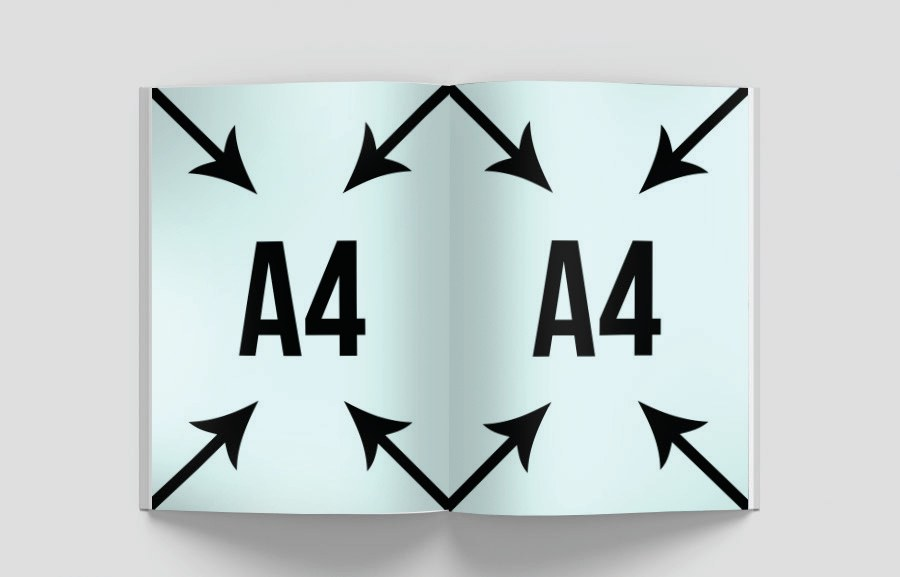
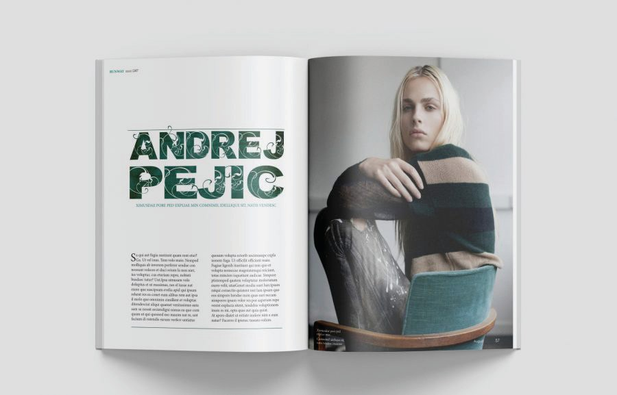
לרוב מעט צרות יותר מ-A4 — אבל מתחילים משם.
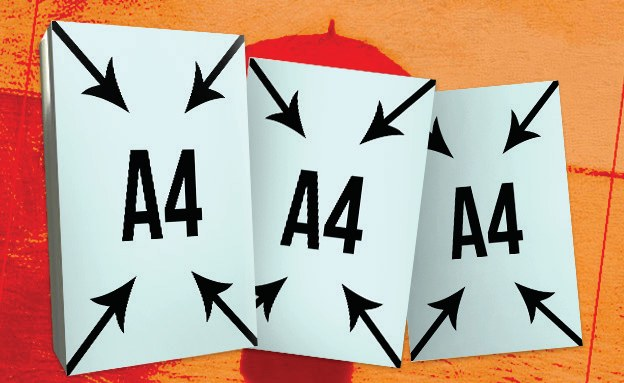
שלט מואר לגובה, בפרופורציה של A.
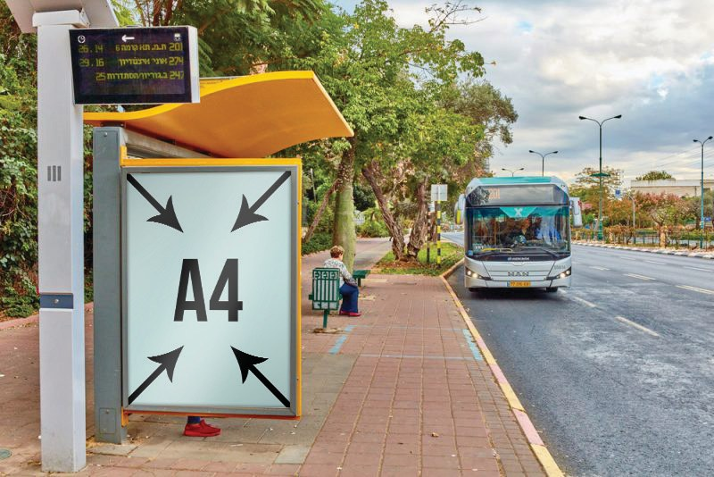
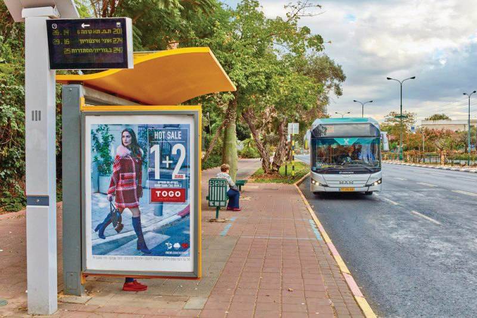
השלטים שעומדים בתוך העיר, בין נתיבי התנועה.
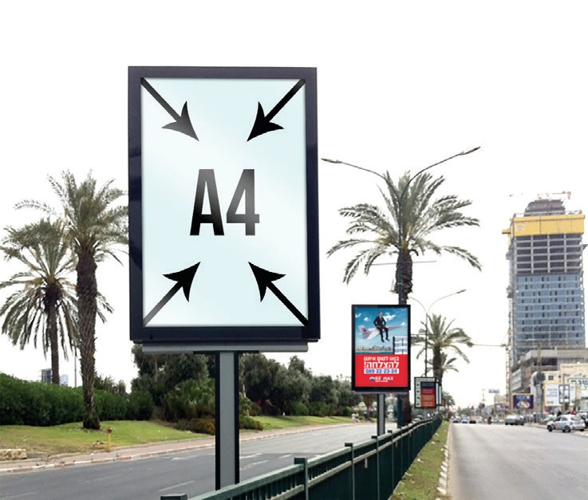
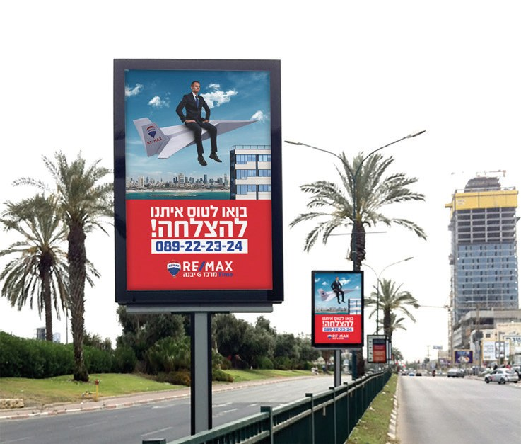
למה זה עובד? כל גודל בסדרת A הוא אותה צורה בדיוק. עיצוב ב-A4 „גדל" ל-A0 או לשלט בתחנה בלי לחתוך שום דבר. רק תוודאו שהתמונות שלכם באיכות מספקת (עמוד 09).
לשלטי חוצות יש פרופורציות קבועות. מכירים את היחס — יודעים איזה מסמך לפתוח.
שלטים שנראים כמו טלוויזיה ישנה. עומדים על עמוד אחד, לרוב בתוך העיר.
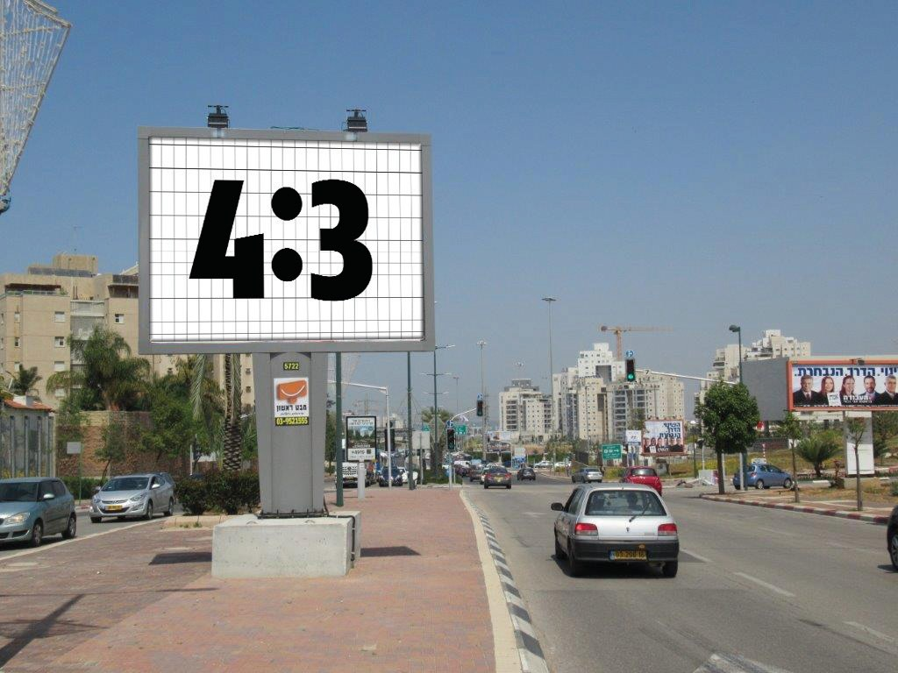
לרוב קרובים לכביש. לפעמים כמה שלטים צמודים בשורה.
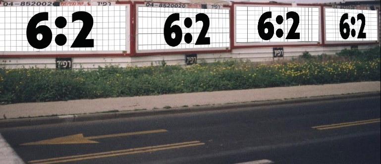
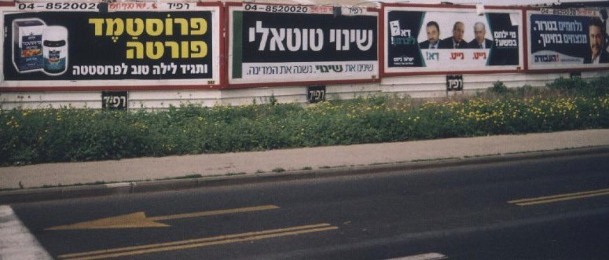
שלטי ענק ליד כבישים מהירים.
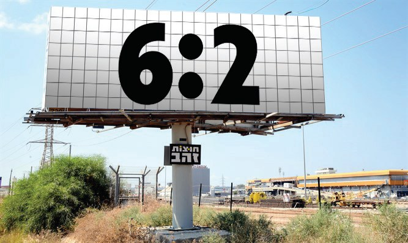
| יחס | שלט אמיתי, לדוגמה | פותחים מסמך של | קנה מידה |
|---|---|---|---|
| 4:3 | 4 × 3 m | 40 × 30 cm | 1:10 |
| 3:2 | 3 × 2 m | 45 × 30 cm | ≈ 1:6.7 |
| 6:3 | 6 × 3 m | 60 × 30 cm | 1:10 |
| 6:2 | 6 × 2 m · 12 × 4 m | 60 × 20 cm | 1:10 · 1:20 |
בשום פנים ואופן לא פותחים מסמך בגודל של מטרים!
שלט 4×3 מ' ב-300 dpi הוא 47,244×35,433 פיקסלים — קובץ של כ-6.7 ג'יגה. המחשב נתקע, והקובץ לא יישלח לאף אחד.
אותו שלט כמסמך 40×30 ס"מ: כ-67 מגה. פי 100 פחות.
על מסך אין סנטימטרים. הכל בפיקסלים: רוחב × גובה. מסמך דיגיטלי פותחים תמיד בפיקסלים ובמצב RGB.
מצוירות כאן ביחס אמיתי זו לזו.
| שימוש | פיקסלים | יחס | הערה |
|---|---|---|---|
| אינסטגרם / פייסבוק — פוסט ריבועי | 1080 × 1080 | 1:1 | הבטוח ביותר — עובד בכל מקום |
| אינסטגרם — פוסט לאורך | 1080 × 1350 | 4:5 | תופס יותר מסך בפיד |
| סטורי / רילס / טיקטוק / שורטס | 1080 × 1920 | 9:16 | מסך מלא בטלפון |
| פייסבוק — פוסט קישור / מודעה | 1200 × 628 | 1.91:1 | גם לינקדאין |
| תמונת כיסוי בפייסבוק | 1640 × 624 | ≈ 2.6:1 | במובייל נחתכים הצדדים |
| יוטיוב — תמונה ממוזערת | 1280 × 720 | 16:9 | טקסט גדול, נקרא גם בקטן |
| יוטיוב — באנר ערוץ | 2560 × 1440 | 16:9 | התוכן במרכז, 1546×423 |
| לינקדאין — באנר פרופיל | 1584 × 396 | 4:1 | התמונה העגולה מכסה צד אחד |
| מסך רחב / מצגת / וידאו Full HD | 1920 × 1080 | 16:9 | מצגות, וידאו, מסכים |
| וידאו 4K | 3840 × 2160 | 16:9 | פי 2 בכל כיוון |
| ניוזלטר בדוא"ל | 600 px | רוחב | גובה חופשי |
זכרו את 1080. רוב המידות לרשתות מתחילות ברוחב 1080 פיקסלים. משנים רק את הגובה: 1080 ריבוע, 1350 לאורך, 1920 מסך מלא.
המידות ברשתות משתנות מדי פעם. לפני עבודה חשובה, בדקו את ההנחיות העדכניות של הפלטפורמה. היחסים 1:1, 4:5, 9:16 ו-16:9 נשארים.
רוב הצפייה היא בטלפון. ככה המידות נראות על המסך שבכיס.
הצהוב הוא הבאנר, ביחס אמיתי למסך טלפון ברוחב 360 פיקסלים.
כמה תמונות זו לצד זו, שמחליקים ביניהן. בפייסבוק עד 10 כרטיסים, כל אחד 1080×1080.
טריק: לעיצוב רציף שממשיך מתמונה לתמונה — פותחים מסמך אחד של 4320×1080 (4 ריבועים) וחותכים אותו לחלקים.
הבאנרים שמופיעים באתרים. קטנים, צפופים — וצריכים לעבוד במבט אחד.
מה נכנס לבאנר? כותרת מכירתית ומעניינת + כמה מילים + כפתור + לוגו. זהו. כמה שפחות תוכן — כך זה ייראה טוב יותר.
משקל: עד 150KB לקובץ. בימינו מעלים לגוגל גם תמונה רוחבית 1200×628, ריבועית 1200×1200 ולוגו, והמערכת מרכיבה מהן באנרים לבד.
כל הבאנרים בעמוד הזה בקנה מידה אחד — אפשר להשוות ביניהם בעין. צהוב = הכי נפוצים.
שתי החלטות שעושים לפני שמציירים קו אחד. טעות כאן מתגלה רק בהדפסה — כשכבר מאוחר.
אור. למסכים. אדום, ירוק וכחול — וכולם יחד נותנים לבן. לכל מה שנראה על מסך: רשתות, אתרים, וידאו, מצגות.
דיו. לדפוס. ציאן, מג'נטה, צהוב ושחור — ככל שמוסיפים, הצבע כהה יותר. לכל מה שמודפס: פלייר, פוסטר, שלט, אריזה.
DPI = כמה נקודות יש בכל אינץ' (2.54 ס"מ). זה חשוב רק בדפוס. על מסך סופרים רק פיקסלים — המספר 72 לא אומר שם כלום.
| מה מדפיסים | מרחק צפייה | DPI בגודל אמיתי |
|---|---|---|
| כרטיס, פלייר, ספר | ביד | 300 |
| פוסטר, שלט בתחנה | 1–3 m | 150 |
| רול-אפ, שלט גדול | 3–10 m | 72–100 |
| שלט חוצות | 20 m+ | 20–50 |
הגדלה לא מוסיפה פרטים. תמונה של 500 פיקסלים שמותחים ל-A4 תצא מטושטשת, גם אם כתוב 300 dpi. בודקים את גודל התמונה לפני שמתחילים.
תמונה מוואטסאפ או מאתר כמעט תמיד דחוסה וקטנה. מבקשים מהלקוח את הקובץ המקורי — מהמצלמה, מהצלם, מהמחשב.
באינדיזיין, באילוסטרייטור ובפוטושופ — חלון „מסמך חדש" מתחיל בבחירת סביבה. בוחרים נכון, והתוכנה מגדירה לבד את היחידות ואת הצבע.
שימו לב: בפוטושופ גם סביבת Print נפתחת ב-RGB. משנים ידנית ל-CMYK בשדה Color Mode.
באיזה פורמט לשמור, ומה לבדוק לפני שמתחילים — ולפני ששולחים.
קבצים פתוחים לעבודה (פוטושופ, אילוסטרייטור, אינדיזיין). אפשר לשנות בהם הכל.
לשמור תמידהקובץ שנשלח לדפוס. איכותי, יכול להכיל הרבה עמודים, הגופנים נשמרים בתוכו.
לדפוסתמונה „סגורה". אי אפשר לערוך את התוכן, ואין שקיפות. אפשר להוריד משקל על חשבון איכות.
לרשתותתמונה עם רקע שקוף. איכותית מאוד, ושוקלת יותר מ-JPG.
לוגו, אלמנטיםוקטור — אפשר להגדיל בלי סוף בלי לאבד איכות. לאייקונים ולוגואים באתרים.
לוגו, אייקוןוידאו ואנימציה לרשתות ולמסכים.
וידאואנימציה קצרה וחוזרת, בלי סאונד. מוגבלת בצבעים.
באנר מונפשclient_poster_A3_v03.pdf
לקוח, מה, מידה, גרסה. לא „סופי-סופי-באמת".
לא בטוחים במידה? שואלים. בית הדפוס, הלקוח או ההנחיות של הפלטפורמה — שאלה של דקה חוסכת הדפסה חוזרת.
רוצים את המדריך אצלכם במחשב, להדפסה או לשיתוף עם הכיתה?
הורדת המדריך ב-PDF 1.8 MB